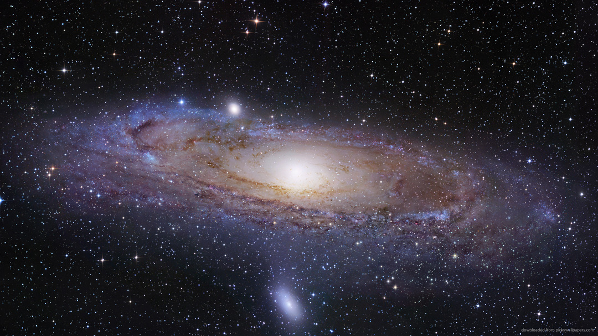

Our galaxy - Milky Way
Other...
The Milky Way Galaxy is our home galaxy in the universe. It is a fairly typical barred spiral with four major arms in its disk, at least one spur, and a newly discovered outer arm. The galactic centre, which is located about 26,000 light-years from Earth, contains at least one supermassive black hole (called Sagittarius A*), and is crossed by a bar. The Milky Way began forming around 12 billion years ago and is part of a group of about 50 galaxies called the Local Group.
The Andromeda Galaxy is part of this group as are numerous smaller galaxies, including the Magellanic Clouds. The Local Group itself is part of a larger gathering of galaxies called the Virgo Supercluster of galaxies.
| Type: | Barred Spiral |
| Diameter: | 100,000 - 180,000 ly |
| Distance to Galactic Centre: | 27,000 ly |
| Mass: | 800 - 1,500 M☉ |
| Age: | 13.6 Billion years |
| Number of Stars | 100 - 400 billion |
| Constellation: | Sagittarius |
| Group: | Local Group |